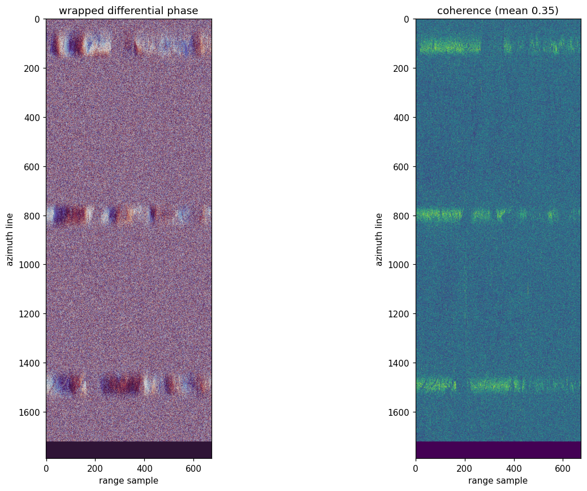
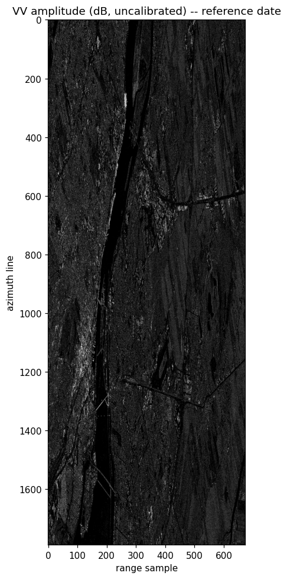
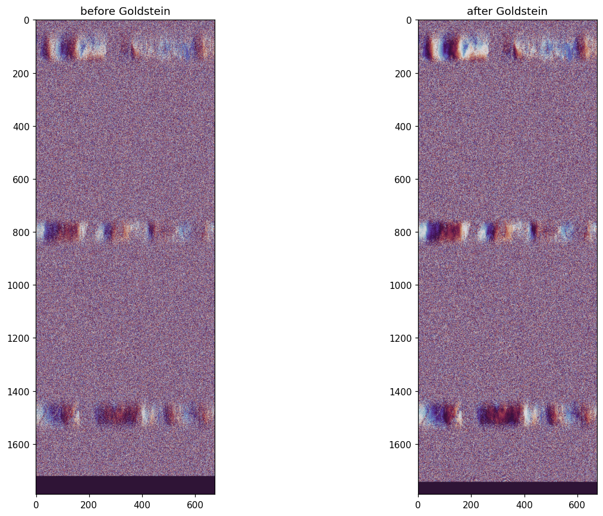
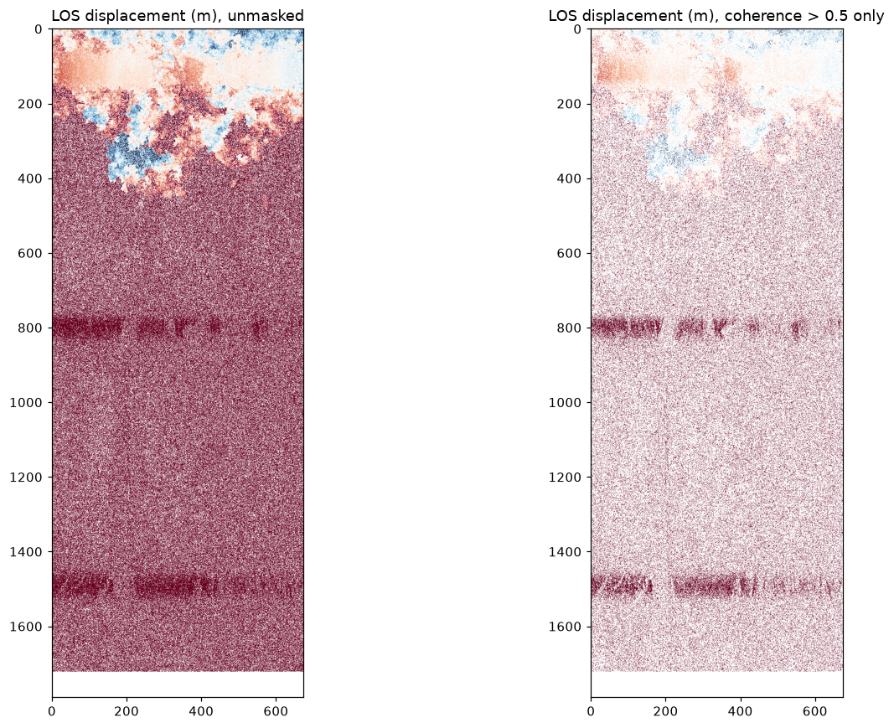
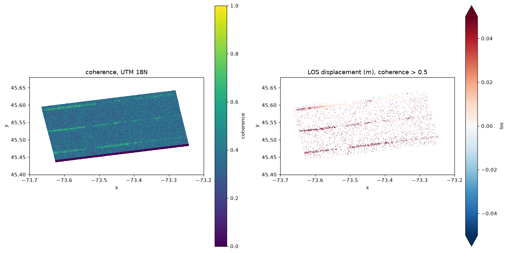

A real two-pass interferometric workflow on RCM Level-1 Stripmap SLC data, following the InSAR processing (SLC) section of 07_03_02_00_RADARSAT_intro.ipynb: pair selection, DEM-assisted coregistration, interferogram and coherence, topographic phase removal, Goldstein filtering, phase unwrapping, phase-to-displacement conversion, and geocoding.
Overview
A real two-pass interferometric workflow on RCM Level-1 Stripmap SLC data, following the InSAR processing (SLC) section of 07_03_02_00_RADARSAT_intro.ipynb: pair selection, DEM-assisted coregistration, interferogram and coherence, topographic phase removal, Goldstein filtering, phase unwrapping, phase-to-displacement conversion, and geocoding.
Core concepts
Learning objectives
Select an RCM Stripmap SLC pair with the same beam, pass, and relative orbit and a short temporal baseline.
Read the RCM product annotation into the metadata shape the Sentinel-1 coregistration functions expect.
Coregister the secondary SLC to the reference with DEM-assisted back-geocoding and spline resampling.
Form a differential interferogram, subtract the DEM topographic phase, and estimate coherence.
Filter the wrapped phase with a Goldstein filter and unwrap it with SNAPHU above a coherence threshold.
Convert unwrapped phase to line-of-sight displacement using the C-band wavelength.
Geocode coherence and displacement for the Montreal pair and interpret coherent patches that unwrap as isolated islands.
Contents
Real-data example: Montreal, 4-day repeat
Takeaways and limitations
Real-data example: Montreal, 4-day repeat
Pair selection (Step 1 of the InSAR workflow). The intro notebook’s advice is to use the same beam mode, orbit direction and satellite geometry, prefer a short temporal baseline (RCM’s 4-day repeat is the headline advantage here), and prefer a small perpendicular baseline. None of the RADARSAT data already in data/ satisfies this – every cached RADARSAT-2 scene is a different beam mode (so a different geometry entirely), and the one cached RCM product is a single date. Searching NRCan/EODMS’s RCMImageProducts STAC collection directly (not just the rcm-ard collection the GRD tutorial used) over Montreal turned up a clean candidate:
Reference
Secondary
Product
RCM1_..._16M11_20230913_224404_VV_SLC
RCM2_..._16M11_20230917_224416_VV_SLC
Date
2023-09-13
2023-09-17 (4 days later)
Beam
16M11 (16 m Stripmap, single-look)
16M11
Relative orbit
15 (ascending)
15 (ascending)
Polarisation
VV
VV
Both were downloaded from EODMS’s Data Delivery Service (/dds/v1/item/..., bearer-token auth from an Earthdata-Login-style password grant) and are cached under Data/08_remote_sensing/08_03_radar/rcm_insar_montreal/.
What’s new here. RCM Level-1 Stripmap SLC has no TOPS bursts to deburst and no separate orbit file to fetch (its product.xml carries its own precise state vectors) – so the only missing piece was a reader for that geometry: geolattice.rsense.sar.radarsat.read_rcm_annotation parses it into the same shape geolattice.rsense.sar.sentinel1.read_slc_annotation returns for one Sentinel-1 burst (one entry in bursts covering the whole image), which means sentinel1.back_geocode and sentinel1.resample_slc (called with ann=None, since Stripmap has no TOPS steering to deramp) work on it completely unchanged, and the rest of the chain (geolattice.rsense.insar) was already sensor-agnostic.
Installation. This notebook needs installation option 5 (core, spatial analysis, spatial statistics, geostatistics and remote sensing): pip install "geolattice[remote-sensing]". See “Installation options” in the GeoLattice README.
Code
# Load the two RCM Stripmap SLC products (reference 2023-09-13, secondary 2023-09-17,# a 4-day repeat over Montreal) and read their annotation metadata (Step 1: pair selection).# 1. Silence third-party warnings (e.g. from rasterio/rioxarray) so the printed output below# stays readable; this notebook isn't demonstrating those libraries' warning behaviour.import warningswarnings.filterwarnings("ignore") # hide library warnings# 2. Standard library / third-party imports used throughout the notebook: time.time() for# timing the slower InSAR steps, Path for the cached-data layout, matplotlib/numpy for# plotting and array math, and rasterio/rioxarray for reading the SLC and DEM rasters.import timefrom pathlib import Path # file pathsimport matplotlib.pyplot as plt # figuresimport numpy as np # arraysimport rasterio # raster readingimport rioxarray # noqa: F401 (registers the .rio accessor on xarray)from geolattice import rsense as rs # GeoLattice remote sensingfrom geolattice.rsense import insar # InSAR toolsfrom geolattice.rsense.sar import radarsat, sentinel1 as s1 # RCM readers and Sentinel-1 tools (reused for RCM)# 3. geolattice.rsense.insar holds the sensor-agnostic InSAR processing chain (interferogram,# coherence, filtering, unwrapping, phase-to-displacement); geolattice.rsense.sar.radarsat# is the new RCM-specific annotation reader; sentinel1 (aliased s1) supplies# back_geocode/resample_slc/terrain_correct, which work unchanged on RCM Stripmap once# radarsat.read_rcm_annotation shapes its metadata like a Sentinel-1 burst.# 4. Bump the default figure DPI so the InSAR phase/coherence plots below are crisp.plt.rcParams.update({"figure.dpi": 110})# 5. Paths to the two cached RCM products (downloaded from EODMS) and their VV SLC GeoTIFFs --# REF is the earlier (2023-09-13) acquisition, SEC the later (2023-09-17) one, 4 days apart.CACHE = Path("../../../../Data/08_remote_sensing/08_03_radar/rcm_insar_montreal")# reference RCM SLC product (13 September 2023)REF_DIR = CACHE /"RCM1_OK2678697_PK2744956_1_16M11_20230913_224404_VV_SLC"# secondary RCM SLC product (17 September 2023)SEC_DIR = CACHE /"RCM2_OK2678697_PK2750939_1_16M11_20230917_224416_VV_SLC"# the complex VV imagesREF_TIF, SEC_TIF = REF_DIR /"imagery/2744956_1_VV.tif", SEC_DIR /"imagery/2750939_1_VV.tif"# 6. Parse each product.xml into the same annotation dict shape Sentinel-1 reading returns# (one "burst" covering the whole Stripmap scene), so the rest of the sensor-agnostic# InSAR chain below can treat this RCM pair exactly like a Sentinel-1 pair.ann_ref = radarsat.read_rcm_annotation(REF_DIR /"metadata/product.xml")ann_sec = radarsat.read_rcm_annotation(SEC_DIR /"metadata/product.xml") # annotation of the secondary# 7. Print per-scene metadata (mission, beam, orbit pass, polarisation, dimensions, incidence# angle range, pixel spacing) so we can confirm -- per Step 1 -- that both products really# do share the same beam mode and geometry, then report the temporal baseline (4 days,# RCM's headline advantage) and the radar wavelength used later for phase-to-displacement.baseline_days =4print(f"geolattice.rsense {rs.__version__}") # GeoLattice versionfor name, ann in (("reference", ann_ref), ("secondary", ann_sec)): # both products# mission, beam, pass and polarisationprint(f"{name}: {ann['mission']}{ann['beam']}{ann['pass']}{ann['polarisation']}, "f"{ann['lines_per_burst']} x {ann['samples_per_burst']}, incidence "f"{ann['incidence_near']:.2f}-{ann['incidence_far']:.2f} deg, "f"pixel spacing {ann['azimuth_pixel_spacing']:.2f} m (az) x {ann['range_pixel_spacing']:.2f} m (rg)")# temporal baseline and wavelengthprint(f"temporal baseline: {baseline_days} days | wavelength {ann_ref['wavelength'] *100:.2f} cm")
geolattice.rsense 0.3.49
reference: RCM-1 16M11 Ascending VV, 7163 x 2697, incidence 36.90-39.04 deg, pixel spacing 2.53 m (az) x 6.97 m (rg)
secondary: RCM-2 16M11 Ascending VV, 7155 x 2697, incidence 36.90-39.04 deg, pixel spacing 2.53 m (az) x 6.97 m (rg)
temporal baseline: 4 days | wavelength 5.55 cm
Both products report essentially the same incidence-angle range and pixel spacing, confirming they really do share the same beam and orbit tube – exactly what Step 1 asks for.
Coregistration
back_geocode locates every Copernicus GLO-30 DEM cell (ellipsoidal heights) in both products’ geometry with geo2rdr on their own precise orbits, giving each reference pixel the secondary position to resample (sec_line/sec_sample), the DEM-surface range difference (delta_range, what the topographic phase in Step 4 needs) and the local incidence angle. resample_slc(..., ann=None) then does plain spline interpolation – no TOPS deramp/reramp, since Stripmap has none.
Code
# Step 2: coregister the secondary SLC onto the reference SLC's geometry via DEM-assisted# geo2rdr/resampling, so every pixel pair below compares the same ground location.# 1. RCM SLC GeoTIFFs store the complex sample as two real bands (I and Q); combine them# into one complex64 array, which is the natural representation for SAR phase math.def read_slc(path):with rasterio.open(path) as src: # open the SLC GeoTIFF# band 1 = real part, band 2 = imaginary partreturn (src.read(1) +1j* src.read(2)).astype("complex64")# 2. Load both SLC rasters into memory as complex arrays (still in their own radar geometry,# not yet coregistered).slc_ref, slc_sec = read_slc(REF_TIF), read_slc(SEC_TIF)# 3. Build (once) a Copernicus GLO-30 DEM over the scene, cached to disk so this expensive# download/merge only happens the first time the notebook is run.dem_path = CACHE /"copdem30_ellipsoid.tif"ifnot dem_path.exists(): # download the DEM onceimport planetary_computer as pc # Planetary Computer URL signingimport pystac_client # STAC search clientfrom rioxarray.merge import merge_arrays # mosaic several rasters box = (-73.70, 45.40, -73.20, 45.68) # Montreal box# open the Planetary Computer STAC catalogue cat = pystac_client.Client.open("https://planetarycomputer.microsoft.com/api/stac/v1", modifier=pc.sign_inplace)# Copernicus DEM tiles clipped to the box tiles = [rioxarray.open_rasterio(i.assets["data"].href).squeeze("band", drop=True).rio.clip_box(*box)for i in cat.search(collections=["cop-dem-glo-30"], bbox=box).items()] dem_geoid = merge_arrays(tiles).astype("float32") # mosaic them# convert to ellipsoid heights and save insar.geoid_to_ellipsoid(dem_geoid, "EGM2008").rio.to_raster(dem_path)# STAC serves Copernicus DEM heights above the EGM2008 geoid; geo2rdr (inside# back_geocode below) needs ellipsoidal heights, so convert and write the result out# before loading it back for use.dem = rioxarray.open_rasterio(dem_path).squeeze(drop=True)# 4. back_geocode: for every reference-image pixel, locate the matching position in the# secondary image via geo2rdr on each product's own precise orbit and this DEM --# returning the secondary (line, sample) to resample, the DEM-surface range difference# (delta_range, the topographic-phase ingredient Step 3 needs below) and the local# incidence angle. Timed since this is one of the slower steps.t0 = time.time()# back-geocoding: where each reference pixel falls in the secondary imagegeom = s1.back_geocode(ann_ref, ann_sec, 0, 0, dem, cols=(0, ann_ref["samples_per_burst"]))# run time and range of the range offsetsprint(f"back_geocode: {time.time() - t0:.0f} s | delta_range {geom['delta_range'].min():.2f}-"f"{geom['delta_range'].max():.2f} m | incidence {geom['incidence'].min():.2f}-{geom['incidence'].max():.2f} deg")t0 = time.time() # start the timer# 5. resample_slc: interpolate the secondary SLC onto the reference grid at the positions# geo2rdr located above (cubic spline, order=3). ann=None skips the TOPS deramp/reramp# Sentinel-1's burst mode needs, since RCM Stripmap has no equivalent steering to undo.# The result is directly comparable, pixel-for-pixel, against slc_ref.resampled = s1.resample_slc(slc_sec, geom["sec_line"], geom["sec_sample"], ann=None, order=3)# run time and valid overlapprint(f"resample_slc: {time.time() - t0:.1f} s, {100* np.mean(resampled !=0):.1f}% valid overlap")
back_geocode: 35 s | delta_range 24.99-26.37 m | incidence 36.87-39.01 deg
resample_slc: 3.4 s, 96.0% valid overlap
A delta_range of 25-26 m across the whole scene is a small, smoothly-varying perpendicular baseline – exactly what Step 1 wants for a deformation-sensitive pair, and consistent with this being a genuine same-track repeat rather than an incidentally-overlapping different track (the kind of mismatch the compact-pol and GRD tutorials’ own RADARSAT-2 archive scenes turned out to have, and why this pair was fetched fresh from EODMS instead).
Interferogram and coherence
differential_interferogram multiplies the reference by the resampled secondary’s conjugate and removes the DEM-predicted (topographic + flat-Earth) phase in one call, using delta_range directly – what remains is deformation, atmosphere and noise (this already is differential InSAR, Step 4 of the intro’s list, since back_geocode supplies the topographic range difference up front). A 4x4 multilook (about 10 m x 25 m ground cells) estimates coherence from geolattice.rsense.insar.multilook_complex.
Code
# Step 3: form the differential interferogram, then multilook it to estimate coherence.# 1. Multilook factor: 4 looks in azimuth x 4 in range, giving ~10 m x 25 m ground cells --# used below for the interferogram, the intensities and the coherence estimate alike,# so all three are computed over matching resolution cells.LOOKS = (4, 4)# 2. differential_interferogram: conjugate-multiply the reference SLC by the coregistered# secondary and subtract the DEM-predicted topographic + flat-Earth phase in one call,# using delta_range from back_geocode above -- this already *is* a differential# interferogram (Step 4 of the intro's list); what remains is deformation, atmosphere# and noise.diff = insar.differential_interferogram(slc_ref, resampled, geom["delta_range"], ann_ref["wavelength"])# 3. Multilook the (still complex) differential interferogram to reduce speckle before# computing/displaying the wrapped phase.diff_ml = insar.multilook_complex(diff, LOOKS)# 4. Multilooked intensity of each SLC (|amplitude|^2) -- the normalising terms the sample# coherence estimator below needs.p1 = insar.multilook_complex(np.abs(slc_ref) **2, LOOKS)p2 = insar.multilook_complex(np.abs(resampled) **2, LOOKS) # multilooked secondary intensity# 5. Sample coherence: magnitude of the multilooked cross-correlation between reference and# secondary, normalised by the geometric mean of their multilooked intensities (the tiny# epsilon just avoids a divide-by-zero in low-signal areas). Ranges 0 (decorrelated) to# 1 (perfectly coherent).coh = np.abs(insar.multilook_complex(slc_ref * np.conj(resampled), LOOKS)) / np.sqrt(p1 * p2 +1e-30)# 6. Summarise coherence over the scene, including the fraction above the 0.3 threshold that# will matter later for masking unreliable phase.print(f"coherence: mean {np.nanmean(coh):.2f}, median {np.nanmedian(coh):.2f}, "f"{100* np.mean(coh >0.3):.0f}% of pixels above 0.3")# 7. Plot the wrapped differential phase (-pi..pi, cyclic colormap) alongside the coherence# map so phase quality and coherence can be compared side by side.fig, axes = plt.subplots(1, 2, figsize=(14, 8))axes[0].imshow(np.angle(diff_ml), cmap="twilight", vmin=-np.pi, vmax=np.pi) # wrapped differential phaseaxes[0].set_title("wrapped differential phase") # titleaxes[1].imshow(coh, cmap="viridis", vmin=0, vmax=1) # coherenceaxes[1].set_title(f"coherence (mean {np.nanmean(coh):.2f})") # titlefor ax in axes: # for both panels ax.set_xlabel("range sample"); ax.set_ylabel("azimuth line") # axis labelsplt.tight_layout() # arrange
coherence: mean 0.35, median 0.35, 59% of pixels above 0.3

Mean coherence of 0.35 over 4 days is plausible for mixed farmland and water at C-band (the bright, scratchy texture visible in the amplitude image below is agricultural field structure, not noise) – this is not an urban scene, so it is not the high-coherence case the coherence tutorial’s Mexico City pairs showed.
A few horizontal bands of visibly higher coherence cut across the whole swath width. They are real (checked against the DEM-surface range difference and the raw secondary-minus-reference azimuth offset, both of which vary smoothly with no trace of these bands, and against a plain interpolation self-test, which ruled out resample_slc), and they survive a 4x finer back_geocode sampling step too, so they are not a scatter-interpolation artifact either. Once geocoded (Step 8 below) they run close to constant latitude, not parallel to the satellite track the way a radar-geometry processing artifact would – consistent with Quebec’s historic seigneurial strip-field land division (long, narrow, consistently-oriented agricultural parcels), where a few specific strips evidently kept a more stable, coherent surface (recently harvested bare soil, say) than their neighbours over these 4 days. That is a plausible explanation, not a confirmed one – it would need an optical image from the same window to check directly.
Code
# Show the scene content behind the phase/coherence numbers above, via plain radar amplitude.# 1. Convert the reference-date multilooked intensity (p1, computed in the coherence cell# above) to an uncalibrated dB amplitude image; np.maximum avoids log10(0) in nodata areas.amp_db =10* np.log10(np.maximum(p1, 1e-8))# 2. Display in grayscale -- the bright, scratchy texture here is agricultural field# structure (not noise), useful context for interpreting the coherence banding discussed# in the surrounding markdown.plt.figure(figsize=(6, 9))plt.imshow(amp_db, cmap="gray", vmin=-10, vmax=20) # amplitude in dBplt.title("VV amplitude (dB, uncalibrated) -- reference date") # titleplt.xlabel("range sample"); plt.ylabel("azimuth line") # axis labelsplt.tight_layout() # arrange

Goldstein filtering
Goldstein adaptive filtering smooths the wrapped phase in the frequency domain before unwrapping, trading a little resolution for much better phase continuity in noisier areas.
Code
# Steps 4-5: Goldstein-filter the wrapped phase to improve continuity before unwrapping.# 1. Keep only pixels with finite, nonzero coherence -- Goldstein filtering (and the# unwrapping after it) is meaningless where the interferogram itself is undefined.valid = np.isfinite(diff_ml) & (coh >0)# 2. Normalise the (multilooked, complex) interferogram to a unit-magnitude phasor: Goldstein# filtering only operates on phase, not amplitude, so strip the amplitude out first.unit_phasor = np.where(valid, diff_ml / (np.abs(diff_ml) +1e-30), 0)# 3. Goldstein adaptive filter: smooths the wrapped phase patch-by-patch in the frequency# domain. alpha controls filter strength (higher = more smoothing), patch/overlap set# the tile size and overlap used for the per-patch FFT filtering -- trading a little# spatial resolution for much better phase continuity in noisier areas.filtered = insar.goldstein_filter(unit_phasor, alpha=0.6, patch=32, overlap=8)# 4. Compare the wrapped phase before vs. after filtering to see the continuity improvement.fig, axes = plt.subplots(1, 2, figsize=(14, 8))axes[0].imshow(np.angle(unit_phasor), cmap="twilight", vmin=-np.pi, vmax=np.pi) # phase before filteringaxes[0].set_title("before Goldstein") # titleaxes[1].imshow(np.angle(filtered), cmap="twilight", vmin=-np.pi, vmax=np.pi) # phase after filteringaxes[1].set_title("after Goldstein") # titleplt.tight_layout() # arrange

Phase unwrapping
SNAPHU unwraps the filtered phase, masked to pixels with coherence above 0.3 – the same unwrapping-reliability threshold the coherence tutorial used.
Code
# Step 6: unwrap the filtered phase, i.e. resolve its 2*pi ambiguities into a continuous field.# 1. Time the unwrapping step (SNAPHU is typically the slowest stage of the whole chain).t0 = time.time()# 2. Run SNAPHU on the Goldstein-filtered phase, using the "defo" (deformation) statistical# cost model, the total look count (az x rg) for its noise-variance weighting, and a# coherence > 0.3 mask -- the same unwrapping-reliability threshold the coherence# tutorial used -- to exclude pixels too decorrelated to unwrap with confidence.unwrapped = insar.unwrap(filtered, coh, method="snaphu", cost="defo", nlooks=LOOKS[0] * LOOKS[1], mask=(coh >0.3))# 3. Report timing and the resulting (now continuous, radian-valued) unwrapped phase range.print(f"SNAPHU unwrap: {time.time() - t0:.0f} s, phase range {np.nanmin(unwrapped):.1f} to "f"{np.nanmax(unwrapped):.1f} rad")
SNAPHU unwrap: 95 s, phase range -155.4 to 49.8 rad
Phase to displacement
d = -(lambda / 4*pi) * delta_phi. At lambda ~ 5.55 cm, one full fringe (2*pi of phase) is about 2.8 cm of line-of-sight motion.
Code
# Step 7: convert unwrapped phase to line-of-sight displacement, d = -(lambda / 4*pi) * delta_phi.# 1. phase_to_los applies that conversion using the radar wavelength (~5.55 cm here, so one# full fringe/2*pi of phase corresponds to ~2.8 cm of LOS motion).los = insar.phase_to_los(unwrapped, ann_ref["wavelength"])# 2. Report the full (unmasked) field's range as a baseline -- see the markdown below for# why this range is implausibly large and not real ground motion.print(f"LOS displacement, full unwrapped field: {np.nanmin(los):.3f} to {np.nanmax(los):.3f} m")# 3. Apply a stricter coherence threshold (> 0.5) than the unwrapping mask used, and blank# out everything below it with NaN.reliable = coh >0.5los_masked = np.where(reliable, los, np.nan) # keep only reliable (coherent) pixels# 4. Report the coherence-masked range and what fraction of the scene survives the mask.print(f"LOS displacement, coherence > 0.5 only: {np.nanmin(los_masked):.3f} to {np.nanmax(los_masked):.3f} m "f"({100* np.mean(reliable):.0f}% of the scene)")# 5. Plot the unmasked vs. coherence-masked LOS displacement maps side by side for comparison.fig, axes = plt.subplots(1, 2, figsize=(14, 8))axes[0].imshow(los, cmap="RdBu_r", vmin=-0.1, vmax=0.1) # all pixelsaxes[0].set_title("LOS displacement (m), unmasked") # titleaxes[1].imshow(los_masked, cmap="RdBu_r", vmin=-0.1, vmax=0.1) # coherent pixels onlyaxes[1].set_title("LOS displacement (m), coherence > 0.5 only") # titleplt.tight_layout() # arrange
LOS displacement, full unwrapped field: -0.220 to 0.686 m
LOS displacement, coherence > 0.5 only: -0.215 to 0.673 m (22% of the scene)

The unmasked field’s full range (tens of centimetres in places) is not real ground motion – it is a direct illustration of Step 9’s warning and a common InSAR pitfall: at a mean coherence of 0.35, SNAPHU cannot reliably resolve 2*pi ambiguities over large parts of this scene, and wrong integer-cycle jumps (not noise, discrete 2.8 cm-multiple errors) are exactly what produce implausibly large unwrapped values.
Restricting to coherence > 0.5 does not fix this, and the way it fails is itself instructive: the surviving pixels sit almost entirely inside the coherence bands from Step 3, and within each band the displacement comes out as one consistent but implausibly large value (tens of centimetres), not speckle noise. Each coherent band is an island surrounded by decorrelated (masked) pixels, so SNAPHU has no reliable path connecting it back to the rest of the scene’s unwrapping network – it can integrate the right relative phase inside the island but still land on the wrong absolute 2pi count for it as a whole. A per-pixel coherence threshold cannot catch this, because every pixel inside the island genuinely is coherent; what is missing is connectivity* to a reliable reference. This is exactly the problem persistent- scatterer and SBAS methods are built to avoid, by keeping a redundant network of connections between reliable points rather than unwrapping one interferogram’s full 2-D field (07_03_01_05_PSInSAR.ipynb, 07_03_01_06_InSAR_SBAS.ipynb) – not something a single pair can fix.
Geocode
terrain_correct places the multilooked LOS and coherence layers onto the DEM’s own map grid, range-Doppler style, using each row’s zero-Doppler time and the orbit.
Code
# Step 8: geocode the multilooked LOS and coherence layers onto the DEM's own map grid.# 1. Reconstruct the per-row zero-Doppler azimuth time at full (pre-multilook) resolution,# from the reference annotation's single burst start time plus the azimuth time interval# (lines_per_burst rows, each one azimuth_time_interval apart).lpb = ann_ref["lines_per_burst"]az_time_full = (ann_ref["bursts"][0]["azimuth_time"] # azimuth time of every line+ (np.arange(lpb) * ann_ref["azimuth_time_interval"] *1e9).astype("timedelta64[ns]"))# 2. Subsample that per-row time to match the 4x azimuth multilooking used for every InSAR# product above, truncated to the actual (multilooked) image height.az_time_ml = az_time_full[::LOOKS[0]][:los.shape[0]]# 3. Near-range slant range (from the two-way slant-range time, converted with the speed of# light) and the multilooked range pixel spacing -- both needed by the range-Doppler# terrain correction to map each (line, sample) to a slant range and ground position.near_range = ann_ref["slant_range_time"] * s1.SPEED_OF_LIGHT /2range_spacing_ml = ann_ref["range_pixel_spacing"] * LOOKS[1] # range pixel size after multilooking# 4. terrain_correct: range-Doppler project the multilooked LOS displacement and coherence# layers from radar (line/sample) geometry onto the DEM's map grid, using each row's# zero-Doppler time together with the reference orbit to locate it on the ground.geo = s1.terrain_correct({"los": los, "coherence": coh}, az_time_ml, near_range, range_spacing_ml, ann_ref["orbit"], dem)# 5. Apply the same coherence > 0.5 reliability mask used in Step 7, now to the geocoded LOS.geo_los = geo["los"].where(geo["coherence"] >0.5)# 6. Plot the geocoded coherence and masked LOS displacement maps side by side in map# projection (UTM 18N) for direct visual comparison against the radar-geometry versions.fig, axes = plt.subplots(1, 2, figsize=(14, 7))geo["coherence"].plot(ax=axes[0], cmap="viridis", vmin=0, vmax=1) # geocoded coherenceaxes[0].set_title("coherence, UTM 18N") # titlegeo_los.plot(ax=axes[1], cmap="RdBu_r", vmin=-0.05, vmax=0.05) # geocoded LOS displacementaxes[1].set_title("LOS displacement (m), coherence > 0.5") # titlefor ax in axes: # for both panels ax.set_aspect("equal") # equal scaleplt.tight_layout() # arrange

The geocoded coherence map confirms the banding runs close to constant latitude rather than parallel to the satellite’s tilted ground track – the detail that ruled out a radar-geometry processing artifact and pointed toward a real, land-management-linked explanation instead. The geocoded LOS panel shows the unwrapping-island problem from Step 7 in map form: the surviving points cluster almost entirely inside those same bands, each one a uniform, saturated colour – an isolated coherent patch that kept its internal phase relationships but landed on the wrong absolute 2*pi count, not a real, spatially consistent displacement field.
Takeaways and limitations
Every InSAR workflow step in the intro notebook now has a real implementation exercised on a real RCM pair: radarsat.read_rcm_annotation (Step 1’s product reading, new in this notebook) feeds sentinel1.back_geocode/resample_slc (Step 2) unchanged, and geolattice.rsense.insar’s differential_interferogram/multilook_complex (Step 3-4), goldstein_filter (Step 5), unwrap (Step 6), phase_to_los (Step 7) and sentinel1.terrain_correct (Step 8) needed no RCM-specific changes at all – they were already sensor-agnostic.
Fixed a real latent bug this pair exposed: terrain_correct assumed row azimuth-time always increases with row number (true for every Sentinel-1 product used so far); this RCM product stores rows in decreasing-time order, which silently broke the time-to-row lookup (np.interp needs ascending xp). Fixed by sorting ascending internally when needed – harmless for the existing ascending case, correct for this one.
Scope of read_rcm_annotation: Stripmap beams only (continuous single-beam imaging, as used here). A ScanSAR beam (e.g. the SC30MCP* compact-pol beams the same EODMS search turned up densely over Montreal) packs several sub-beams with their own burst-like timing, which this reader does not parse – a natural next step given how much ScanSAR SLC coverage is actually available.
No time series here (one pair only) – geolattice.rsense.insar.sbas’s network tools from the Sentinel-1 SBAS tutorial apply equally once more RCM dates are coregistered the same way.
The coherence-banding interpretation (Quebec strip-field land management) is a plausible reading of the evidence gathered, not a verified one.
References
Natural Resources Canada / EODMS, RCM Image Products STAC collection (https://www.eodms-sgdot.nrcan-rncan.gc.ca/search/) and Data Delivery Service API.
Small, D. (2011). Flattening gamma: Radiometric terrain correction for SAR imagery. IEEE TGRS, 49(8), 3081-3093.
Goldstein, R. M., & Werner, C. L. (1998). Radar interferogram filtering for geophysical applications. Geophysical Research Letters, 25(21), 4035-4038.
Chen, C. W., & Zebker, H. A. (2002). Two-dimensional phase unwrapping with use of statistical models for cost functions in nonlinear optimization (SNAPHU). JOSA A, 19(5), 1026-1037.